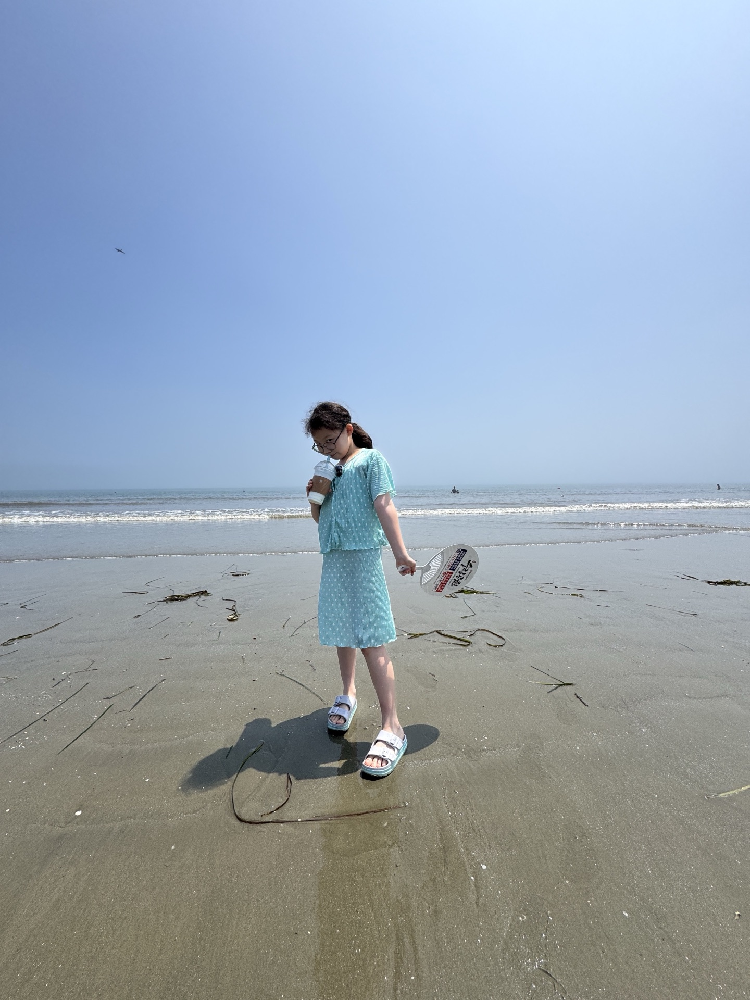
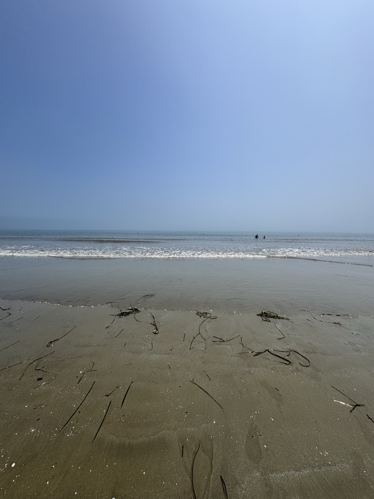
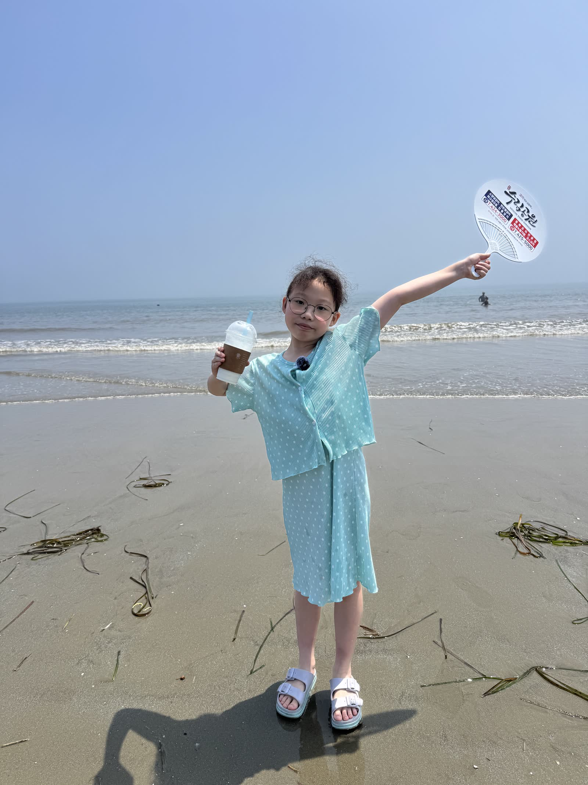
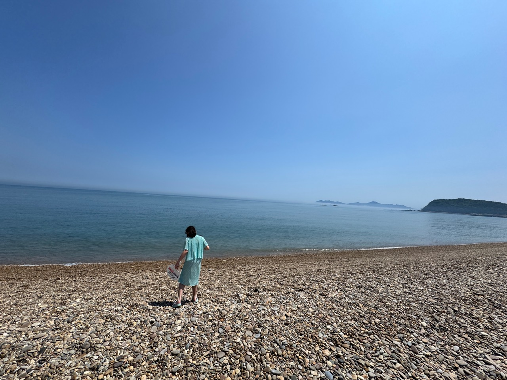
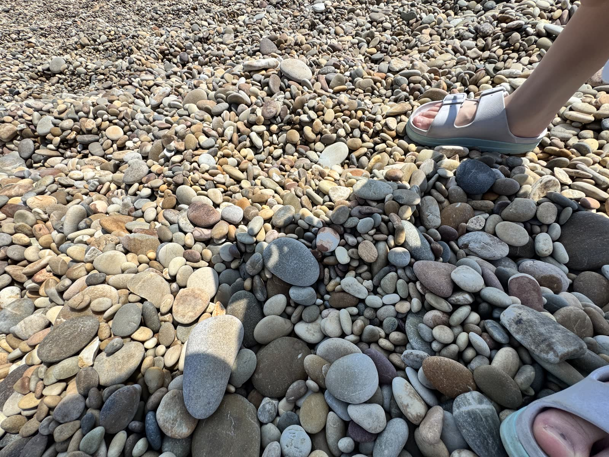
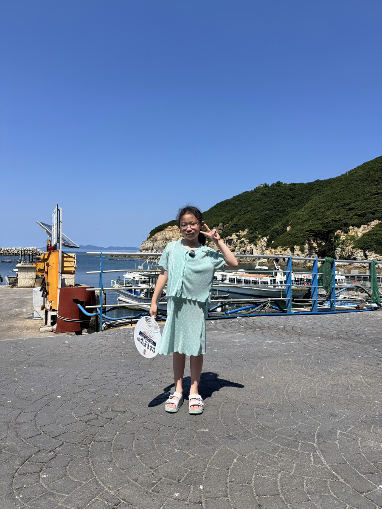
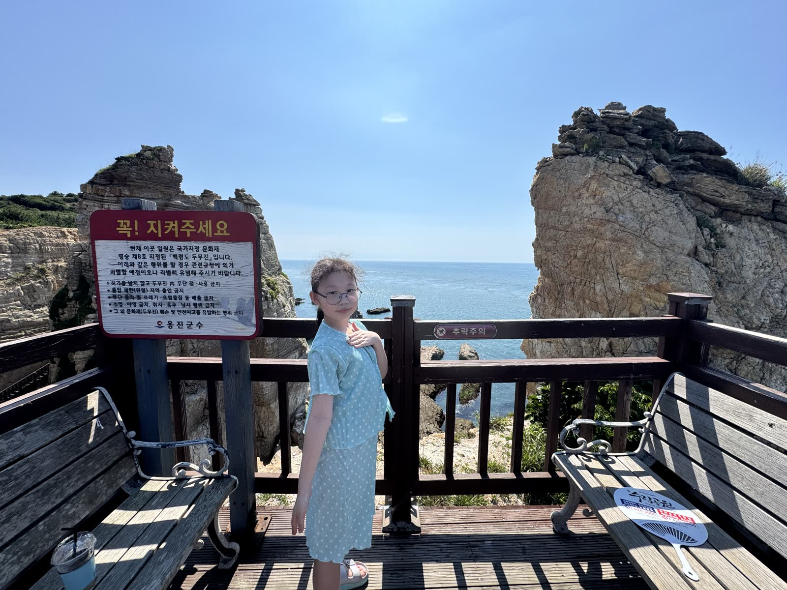
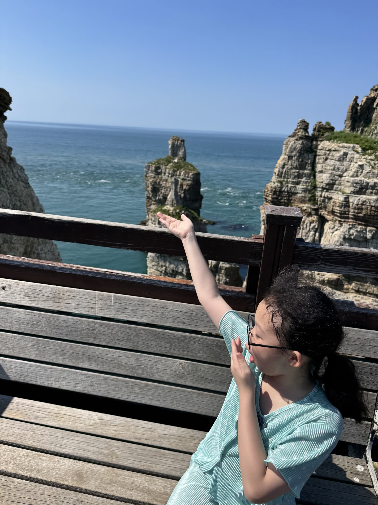
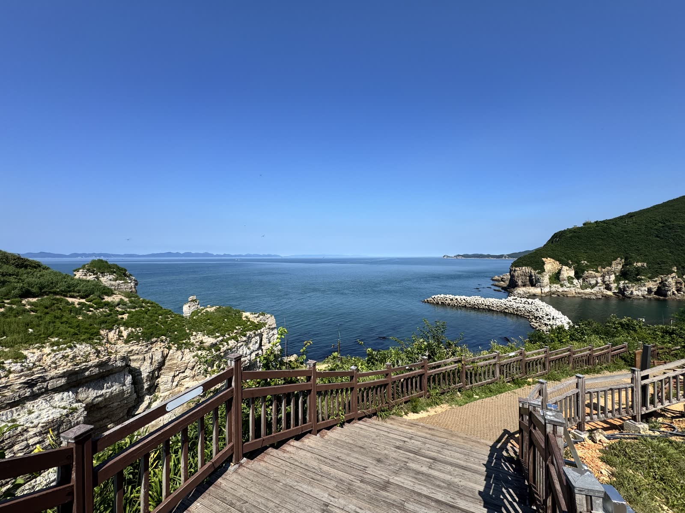

아빠 햄 × 딸 소율 · 가족용 기록2026.08.03 · 가족끼리 보기

FATHER & DAUGHTER IN BAENGNYEONG
아빠와 딸의
백령도
아빠와 소율이가 단단한 모래를 밟고, 자그락거리는 콩돌을 지나, 두무진 데크길까지 함께 걸은 하루를 모았어.
13:06 · FIRST STOP
비행기가 내려앉았던 모래
사곶은 모래사장인데도 발이 푹 빠지지 않았어. 소율이는 바다를 보며 음료를 마시고, 두 팔을 활짝 펴며 넓어진 물가를 신나게 걸었어.


단단한 석영 모래와 수평선. 사진 원본은 가족 보관함에 따로 안전하게 남겼어.
13:46 · SECOND STOP
걷는 소리가 자그락
콩돌해안은 모래 대신 둥근 돌이 해변을 가득 채웠어. 파도보다 발밑의 자그락 소리가 먼저 기억나는 곳이었어.


돌은 하나도 가져오지 않고, 사진과 소리만 챙겨왔어.
14:11~15:06 · THIRD STOP
두무진 포구에서 전망대까지
콩돌에서 바로 두무진으로 왔어. 포구 앞 카페에서 잠깐 쉬고 데크길을 올라, 소율이와 바위 사이로 펼쳐진 푸른 바다를 함께 봤어.




포구에서 전망대까지, 아빠와 딸이 나란히 걸은 오늘의 마지막 산책.
TODAY, IN ORDER
오늘의 길
말로 남긴 이동과 사진의 촬영시각을 맞춰서 오늘 하루를 정리했어.
- 백령면옥물냉면 두 그릇과 수육으로 시작.
- 자연마을커피를 마시고 더위를 식힌 뒤 출발.
- 사곶해변단단한 모래와 넓은 수평선.
- 콩돌해안파도와 둥근 돌이 만든 자그락 소리.
- 두무진포구에서 쉬고 데크길과 전망대까지 산책.
아빠와 딸의 백령도 둘째 날.
둘이 걷고 웃었던 하루를 사진 아홉 장으로 남겼어. 저녁과 해넘이는 다녀온 뒤 다음 장에 이어 붙일게.
둘이 걷고 웃었던 하루를 사진 아홉 장으로 남겼어. 저녁과 해넘이는 다녀온 뒤 다음 장에 이어 붙일게.